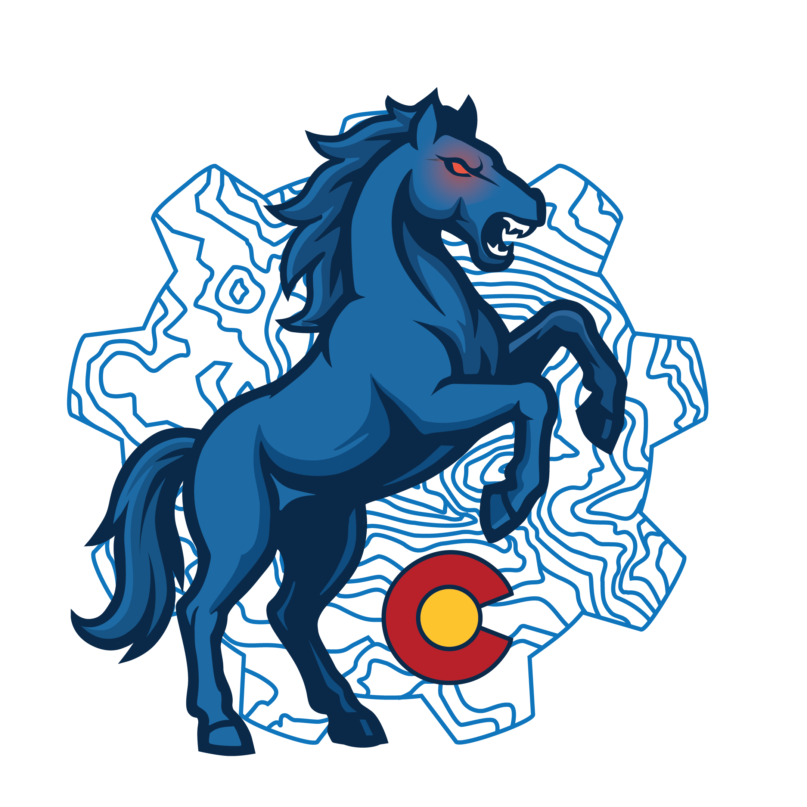

Two days of talks and open spaces for engineers, SREs, and platform teams across the Rocky Mountain region — back in Denver for a milestone tenth year. Speakers are confirmed and the schedule is live.


Brent is Principal at Great Circle Associates, where he helps engineering organizations build calmer, more capable incident management programs. He led incident response for Slack's entire engineering org, building the company's incident management program essentially from scratch and scaling it for over three years. Before that, as part of Google's SRE organization, he created the Incident Management at Google (IMAG) system and helped shape Google's postmortem practice — both still in use today. He's also worked with engineering teams at Apple, Salesforce, Atlassian, Netflix, and others on strengthening how they prepare for and learn from incidents.
Outside of tech, Brent brings an unusual second career to how he thinks about emergencies: he's a former air search-and-rescue pilot and incident commander, an emergency dispatcher and dispatch supervisor for major arts and music festivals, and a longtime CERT member and instructor. He's also co-author of the O'Reilly book Building Internet Firewalls.
DevOpsDays Rockies is part of the global DevOpsDays series — a community-run, non-profit conference for anyone working on IT improvement: engineers, SREs, platform teams, managers, and everyone adjacent to how software actually ships.
The format mixes curated talks with open spaces, the DevOpsDays signature: unscheduled time where attendees propose and lead the sessions they actually want to have. Some of the best conversations of the event happen in slots that didn't exist on the printed schedule.
2026 marks our 10th year bringing this event to Denver. We're a volunteer-run, all-nonprofit operation — ticket and sponsorship revenue goes straight back into running the event.
Times below are Mountain Time, rounded for readability. The event runs single-track — everyone sees the same talks. Talk titles link to more detail; speaker names link to speaker profiles.
Our call for proposals closed May 31, 2026. Here's the full confirmed lineup — Talks run 30–60 minutes on the main schedule, Ignite Talks are fast 5-minute lightning sessions. Names and talk titles link to the full session details on our schedule tool.


Our CFP for 2026 has closed, but the broader DevOpsDays series has several cities with open calls right now if you're looking to submit a talk sooner.
DevOpsDays Rockies runs on sponsorship. If your company hires from, sells to, or just wants to support this community, there's a tier for you.


Questions about tickets, sponsorship, speaking, accessibility, or anything else — the organizing team reads everything that comes in.
All attendees, speakers, and sponsors are expected to follow the DevOpsDays Code of Conduct.
 Rockies
Rockies